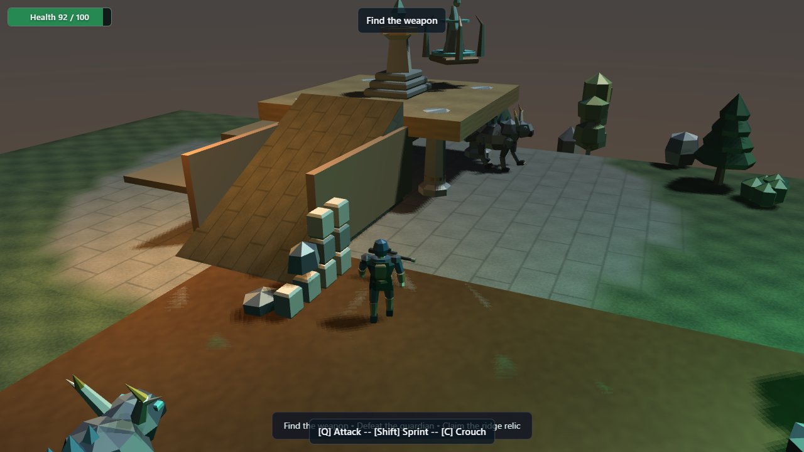
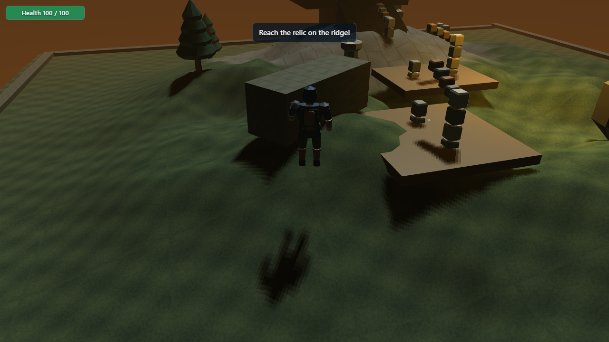
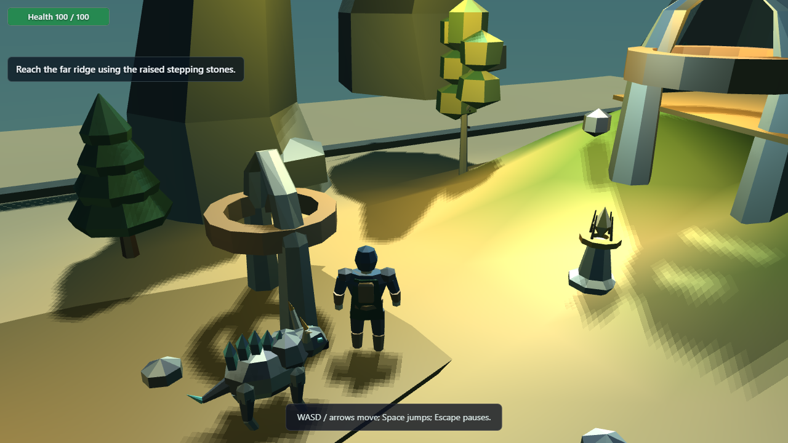
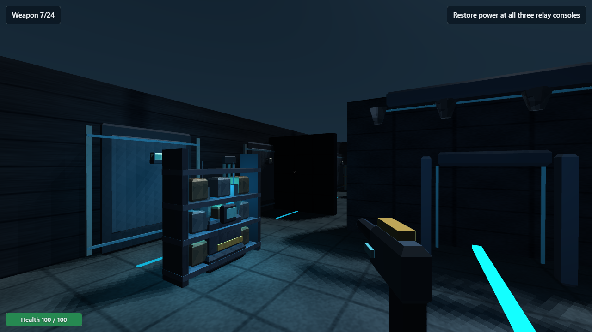
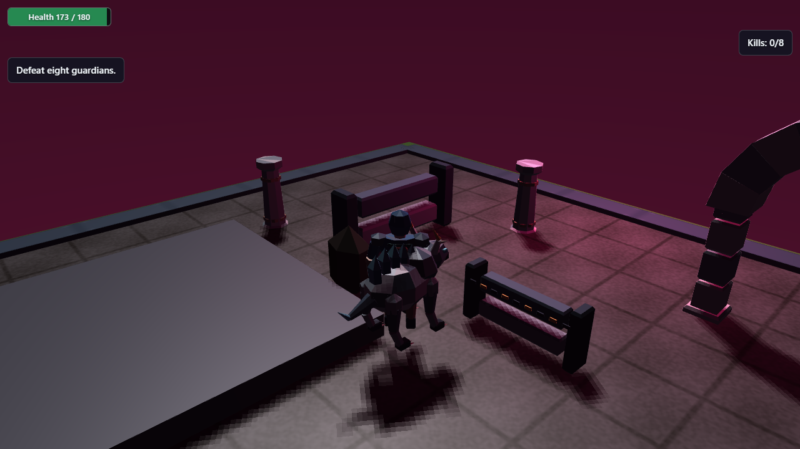
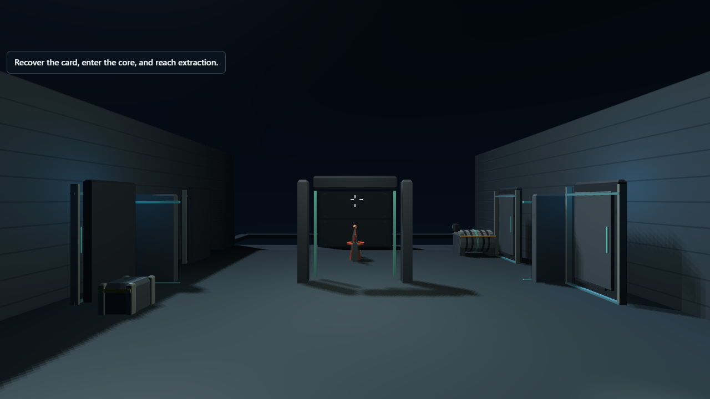
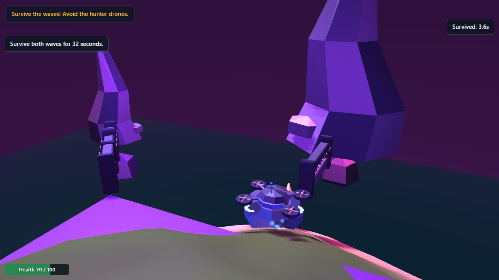
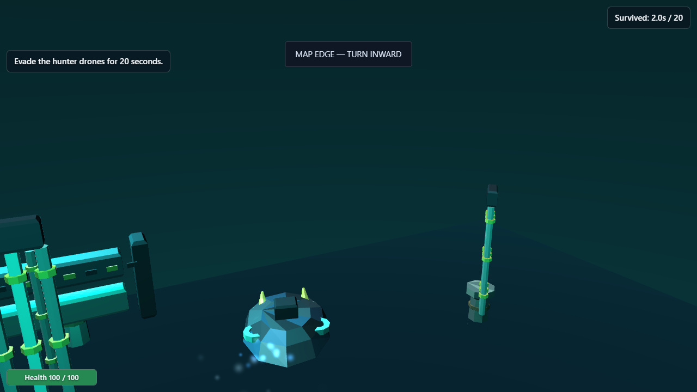
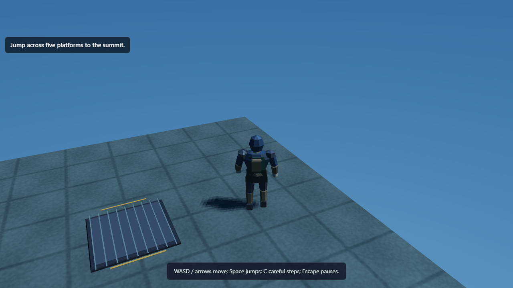

Featured

Forest RangeFeatured
Third-Person Exploration · Third-Person
A woodland trail through three groves. Follow the amber waystones to the old lookout.

Arsenal RunFeatured
First-Person Action · First-Person
A compact arena assault. Use cover, switch between sidearm and rifle, defeat three sentries and reach extraction.

Power GridFeatured
First-Person Puzzle/Objective · First-Person
Bring an abandoned generator hall back online. Carry the power cell to its socket, activate two coolant consoles and open the emergency exit.

Moving TempleFeatured
Third-Person Experiment · Third-Person
Ride the crossing slab, activate the amber lift, and jump to the high shrine.
Samples

Foglight
Third-Person Adventure · Third-Person
Carry light through a mist-filled vale. Awaken three ancient beacons, evade the antlered guardian, and open the sanctuary.

Relic Frontier
Third-Person Adventure · Third-Person
Explore an overgrown frontier outpost. Recover a weapon, defeat the stone guardian, claim the ridge relic and cross the sealed border gate.

Relic Island
Third-Person Adventure · Third-Person
A small island treasure hunt. Recover three golden relics and the gate key, then awaken the hilltop shrine.

The Sanctum Key
Dialogue / Inventory Puzzle · Third-Person
An old sailor carries the key to a forgotten sanctuary. Speak with him, then unlock the northern door.

Relic Runner 2
Third-Person Adventure · Third-Person
Reach the amber ridge relic. Use the low ramp, keep clear of the guardian, and claim the high ground.

Valley Run
Third-Person Platforming · Third-Person
Cross a narrow valley and climb the stepping stones to the far ridge. The amber camp marks your checkpoint.

Painted Wilds
Third-Person Exploration · Third-Person
A short landscape walk through moss, ochre and slate. Follow the three survey stones.

Textured Adventure
Third-Person Adventure · Third-Person
Three amber relics rest among violet ruins. Collect them, avoid the red fissure, and restore the shrine.

Temple Switch Puzzle
Puzzle Experiment · Third-Person
Two amber seals power an ancient gateway. Step onto each seal and cross the open gate.

Signal Relay
Stealth / Objective · First-Person
Restore three relay consoles in a silent communications station. Slip past patrol drones or use your sidearm, then reach the green extraction bay.

Silent Sector
Stealth / Objective · First-Person
A short stealth infiltration through a listening security station. Break sightlines, secure the Data Core and escape unseen.

Iron Arena
First-Person Combat · First-Person
Three armored sentries hold the forge courtyard. Keep moving and use the pillars for cover.

Opus Arena
Third-Person Arena Shooter · Third-Person
Hold the blue courtyard against eight approaching guardians. Face each target before firing.

Power Station
Third-Person Puzzle · Third-Person
The turbine is silent. Collect three fuel cells, speak to the engineer, and restart the machine.

Assembly Line
First-Person Experiment · First-Person
Three fabrication bays assemble drones in real time. Clear space with your blaster, then inspect the control desk.

Blacksite
First-Person Experiment · First-Person
Take the access card, open the security door, and cross the checkpoint into the core.

Shifting Facility
First-Person Experiment · First-Person
Walk the three machinery bays. Test the swing door and follow the amber lane to the far inspection station.

Signal Zero
Third-Person Objective · Third-Person
Trace a silent outpost to its deep relay. Reach the cyan console to save your progress and descend.

Dungeon Descent
Top-Down Dungeon Puzzle · Top-Down
Two distant seals hold the stone gate shut. Light both seals and pass through the eastern arch.

Sentinel Maze
Third-Person Maze · Third-Person
A watchful guardian patrols a slate labyrinth. Follow the amber route around the walls to the exit.

Survival Arena
Survival Experiment · Hovercraft
Four amber orbs, three lives, and three hunters. Sweep the courtyard before they surround you.

Survival Arena 2
Hovercraft Survival · Hovercraft
A hovercraft endurance run on a tidal ring. Two waves arrive; keep moving for thirty-two seconds.

Survival Arena 3
Hovercraft Survival · Hovercraft
Twenty seconds on the copper island. Hunter drones enter from the central transmitter.

Skyway Trial
Platforming Experiment · Third-Person
Five suspended platforms rise above a quiet blue void. Commit to each jump and reach the amber summit.